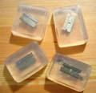

1 mai 2006

On peut être trash et soigner son hygiène. Mais se sécher les cheveux dans la baignoire ça fait ringard, Cloclo c’était il y a presque 30 ans… Heureusement, cette boutique a inventé le savon avec une vraie lame de rasoir au milieu. À $6 l’unité voici de quoi se fendre la poire… À quand le tapis de bain à clous, le pétard-coton-tige, ou la crème hydratante avec du vitriol au fond du pot ?
30 avril 2006

Géoloquoi ? Géolocalisation. Ça consiste à lier une position géographique à un site Internet, avec une latitude et une longitude. Par exemple, savoir que la pizzeria « La Gourmande » est située en 48.8565,2.3025, c’est-à-dire 48 degrés 51 minutes (60e de degré) et 23 secondes (60e de minute) de latitude Nord pour 2°18’9” de longitude Est. Ou encore que la machine hébergeant ce blog est en 48.85814,2.30055.
22 avril 2006
Le printemps revient, c’est la saison des manifs. Alors que le soleil endormi semble encore hésiter à nous réchauffer de ses rayons dorés, d’aucuns n’hésitent pas à venir battre le pavé contre d’autres rayons. La semaine dernière, Cherbourg a été le théâtre d’une manif anti-nucléaire mondiale. Mondiâle, la manif ! Eh oui, « Sortir du nucléaire » revendique 720 associations, 41 pays… 12.000 manifestants selon la police. Ah c’est sûr, ça fait petit joueur après les manifs anti-CPE, le public est blasé, c’est comme diffuser un Bergman en VO un soir de finale footesque. En moins subtil.
17 avril 2006
Pour mon assoce humanitaire j’ai mis en place un forum phpBB, sans le mettre à jour tous les mois comme l’aurait fait n’importe quel admin parano de base.
C’était sous-estimer le nombre de script-kiddies prépubères en mal de sensations fortes qui glandent sur Internet à la recherche d’un site sur lequel venir vomir leur purulente bêtise et leurs scripts tout frais sortis du numéro spécial Noël de l33t h4x0r magazine.
16 avril 2006
Les noms d’écoles ne sont pas le fruit du hasard. Le baptême d’une école, c’est une canonisation républicaine. Pourtant qui sait vraiment quels glorieux destins cachent les patronymes de son parcours scolaire ?
Pour ma part j’ai fréquenté l’école Marius Jacotot, l’école Saint-Joseph, le collège Marcelle Pardé, et le lycée Louis Pasteur.
Saint-Joseph et Louis Pasteur ça va, tout le monde connaît. Mais les deux autres ne sont même pas dans Wikipedia !
11 avril 2006
Pour aller en Inde il faut un passeport valable 6 mois après le retour, ce qui n’est pas le cas de mon passeport d’urgence made in La Paz. Ce matin je suis donc allé faire une demande pour un nouveau passeport. Ça tombe bien, depuis le 3 avril les Parisiens ont droit au passeport biométrique, qui permet d’aller aux US sans visa.
Il faut savoir que sans passeport biométrique, à moins d’avoir un passeport optique émis avant le 26 octobre 2005, tout voyageur pour les US a besoin d’un visa.
10 avril 2006
Ce week-end j’ai vu les copains avec qui je prépare un projet humanitaire en Inde pour juillet. Ça a été l’occasion de mises en situation intéressantes.
En particulier, un Indien me demande pourquoi je suis venu, vu que si je leur avais plutôt donné l’argent du billet d’avion ils auraient pu se payer un ouvrier/prof bien plus efficace que moi : ce qu’il veut c’est pas qu’on vienne le voir, c’est qu’on lui donne de l’argent pour financer ses projets.
13 août 2005
Cet article publié en mai 2004 a été mis à jour.
La page Speedtouch & Debian expliquait comment connecter
votre PC à Internet. Mais si vous voulez vous connecter avec un 2nd PC sans
débrancher le 1er, il faut transformer ce dernier en passerelle. Et pour peu
que le 2nd PC soit un laptop, ce serait bien pratique de le relier en Wifi !
Cette page vous explique comment faire tout ça avec une debian (sarge), un
noyau 2.4 ou 2.6, une carte WLAN NetGear WG311 (802.11g) et les drivers
madwifi. On peut sans doute l’adapter facilement à d’autres configurations.
26 juin 2005
Cet article publié en août 2002 a été mis à jour.
Cet article est obsolète.
Cette page explique comment installer le modem ADSL Alcatel Speed Touch USB
sous Linux avec une distribution Debian. En effet, ayant eu à réaliser cette
installation, j’ai perdu quelques heures à essayer d’utiliser, par exemple, le
package kernel-patch-2.4-speedtouch, ou encore à chercher quoi mettre dans
mon /etc/network/interfaces.
21 février 2005
Que ce soit clair, “Danny the Dog” est le titre français de cette
production Franco-Américano-Anglo-HongKongaise. Hors de l’hexagone, le
film est titré “Unleashed”, mot jugé trop recherché pour le public
français. Le ton est donné, nous avons affaire à une Besson production.
Et ça commence fort, avec Jet Li dans le rôle de Croc-Blanc qui tue
en quelques secondes d’une chorégraphie irréprochable une dizaine
d’affreux histoire de rappeler à leur patron que c’est mal d’oublier de
payer son patron à lui (un affreux, aussi). Commence la tournée des autres
affreux qui doivent payer ; les dents s’envolent avec grâce, le sang gicle
au ralenti, les poitrines s’enfoncent dans un bruits d’os brisés que ne
renierait pas Steven Seagal. Vient le tour de l’antiquaire,
Danny-Croc-Blanc ronge son frein dans l’arrière-boutique quand surgit son
sauveur, homme blessé, exemplaire, sensible, et sa “fille” blessée,
exemplaire, sensible, qui vient juste d’avoir dix-huit ans, ouf, et dont
on se doute qu’elle ne gardera pas longtemps ses bagues aux dents. Les
affreux sont de plus en plus affreux et les samaritains de plus en plus
irréprochables ; on l’aura compris les personnages ne sont pas taillés
dans la nuance : il y a deux pôles et chaque personnage se trouve à l’un
deux et pas au milieu. Même Danny passe de l’un à l’autre avec une
soudaineté incroyable. Il y a une seule scène à la fin du film où il est
sur le fil du rasoir, hésitant entre les deux extrêmes…